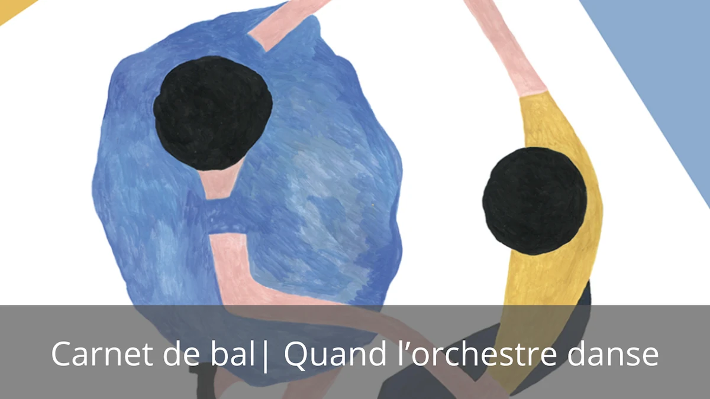

Création 2025
Carnet de bal
Quand l’orchestre danse
- Forme
- Concert et danse
- Public
- Tout public
Cher public, si vous venez à Carnet de bal, vous commencerez par un concert et verrez la musique envahir l'espace, vous vous émerveillerez du spectacle d’une boîte à musique humaine, et vous laisserez inviter à la danse pour finir dans la liesse d'un bal.
Quand l’orchestre danse…
Équipe artistique et production
par l'Orchestre du Lointain
Sophie Lechelle – Direction musicale
Victor Duclos – Direction chorégraphique
Nicolas Flodrops – Conseils musicaux
Nicolas Flodrops, Fanny Lavigne et Frédéric Volanti – Arrangements
Production – Orchestre du Lointain
Partenaires – DRAC Hauts-de-France, Département du Pas-de-Calais, Communauté de Communes du Pays d’Opale, Le Channel – Scène nationale de Calais, Ville de Wimille